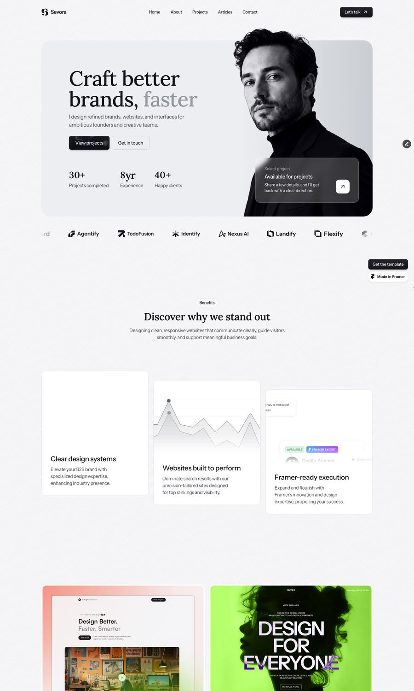
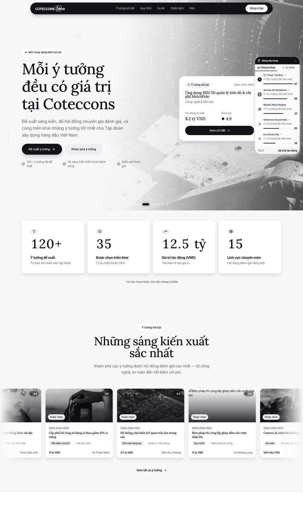
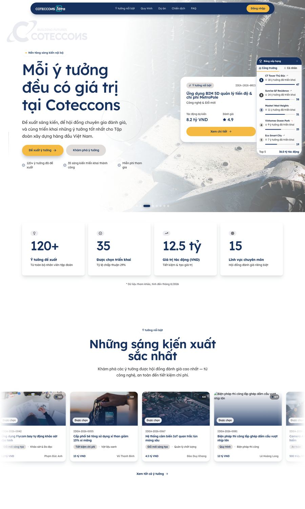

Sáu công cụ đã có sẵn: trích design từ một trang thật, hallmark, impeccable, tokenize, dọn slop, ship. Cái thiếu không phải công cụ, mà là một đường ống nối chúng và một con số để nghiệm thu. Đây là lượt chạy thật đã sinh ra skill reskin.
Bỏ chặng giữa là gãy. Artifact chứ không phải ghi chú. Đó là lý do nối được thành một skill thay vì một checklist.
Trang framer/SPA không lộ chuyển động qua HTML. Duyệt computed style để lấy token, gọi
getAnimations() ngay sau domcontentloaded để lấy WAAPI keyframes,
cuộn theo bước 800px để bắt sticky/marquee/card-stack, hover từng phần tử rồi diff.
Ba file, một nguồn chân lý. Mục quan trọng nhất là Notes: những gì của nguồn tham chiếu không được kế thừa. Nguồn nào cũng có khuyết tật đáng chép nhầm.
design.md · tokens.css · motion.mdDNA cộng một bảng Enforcement riêng của dự án: mỗi luật một dòng, có severity. Đây là chỗ biến gu thẩm mỹ thành thứ review được.
DESIGN.md · .impeccable/DESIGN.md · .impeccable/config.jsonSai lầm tốn nhất là sed thẳng hex-cũ sang hex-mới trong JSX: bảng màu thứ hai phải làm lại từ đầu. Tokenize một lần, rồi mỗi biến thể chỉ là một khối ~20 token.
bg-[#121218] → bg-[var(--ink)]Quét bản production, không quét dev server. Nhóm finding theo luật, sửa nhóm đông nhất, quét lại, ghi số từng vòng. Đừng waive khi chưa đo tại chỗ.
impeccable detect http://localhost:3001 --jsonBảng “đầu → sau khi sửa → sau khi waive”, root cause chứ không phải danh sách triệu chứng, cùng những gì cố ý để lại kèm lý do.
git branch → MR · vercel deploy --prod| Vòng | Đã làm gì | Findings |
|---|---|---|
| 0 | Quét lần đầu sau khi áp DNA | 108 |
| 1 | Chip eyebrow dùng chung, cỡ chữ tối thiểu 12px, gỡ uppercase | 37 |
| 2 | Nền tối chuyển lên chính element, bỏ hover-transform | 22 |
| 3 | Bỏ chroma còn sót, tracking đổi sang em, FAQ dùng grid-rows | 16 |
| 4 | Chữ trên nền tối chuyển sang màu đặc | 8 |
| 5 | Hero đổi sang nền sáng | 2 |
| — | Biến thể brand: mint bỏ làm quầng radial. Xám trung tính trên nền có màu, ám theo hue | 12 → 2 |
Hai finding còn lại: một cái đo tại chỗ ra 18.6:1 trong khi
detector báo 1.6:1 (false positive xuyên compositing layer). Giữ luật sống và ghi bằng chứng. Một cái layout-transition chưa truy được nguồn. Không có finding nào “để đó”.
Đây là phần một README ghép sáu tool sẽ không có.
background: shorthand xoá background-colorMọi mặt tối resolve về nền sáng của phần tử cha, nên chữ trắng thành trắng-trên-trắng. Sửa một
dòng, tách background-image và background-color, rụng 15 finding.
px vỡ theo cỡ chữ-1.44px đúng ở 72px, nhưng ở 18px nó thành -0.08em. Luôn dùng em.
next start mới báo EADDRINUSE rồi chết trong im lặng, bản cũ vẫn phục vụ.
Cổng sai nguy hiểm hơn không có cổng, nên luôn lsof -ti:<port> trước khi tin kết quả.
npm run build xoá .next khi dev server đang chạy → trang trả 500 → detect
quét một trang lỗi và ra số 0. Kiểm HTTP code và grep một chuỗi có thật trong trang.
transform inline khi animation đápNó xoá translateX(-50%), thanh nav lệch khỏi tâm. Căn giữa bằng
left/right:0 + margin-inline:auto.
Logo SVG render một màu, brand book ghi màu khác. Book còn có luật ghép màu (“một core + một vibrant”) và luật typography có thể buộc bỏ mặt chữ serif vừa chọn. Nói rõ chỗ mâu thuẫn ra, đừng lặng lẽ chọn một bên.
Accent luminance cao chỉ đạt 1.85:1 với trắng. Tính contrast rồi mới gán vai trò, đừng gán rồi mới tính.
Cùng một màu thương hiệu: làm nền đặc thì sạch, trải mờ trên nền tối thì detector bắt
ai-color-palette và radial-spotlight-glow.


